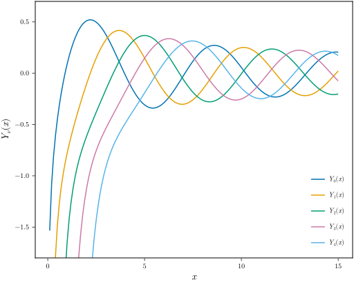
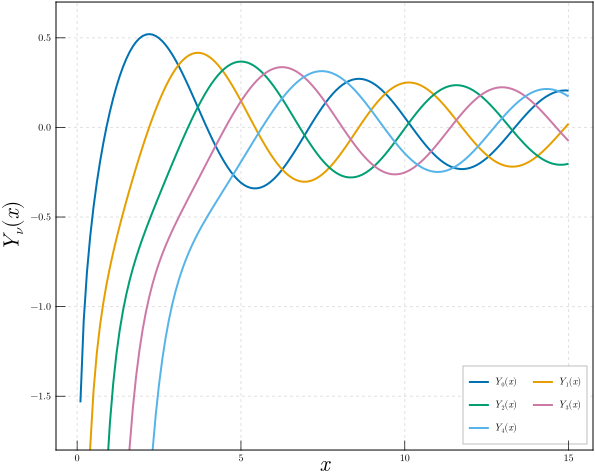
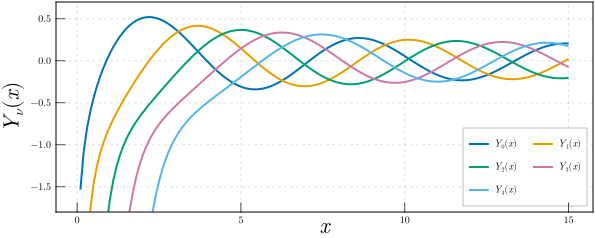

Exporting publication figures
You often want to apply specific themes or export figures in different sizes. For instance a margin figure size and a full \textwidth size. Also you may want to have different themes for the margin figures and the main base document figures. This type of task is made easier by MakieMaestro by supplying the Themes module and the savefig function.
Theming and Sizing
First off, we would like to set a default width that will be used if no width is provided. MakieMaestro tries to avoid assuming any particular aspect of your figures except some elementary sensible defaults. The function width!, is used to set the default width.
using MakieMaestro.Themes
width!(Themes.A4_WIDTH/2)105.0 mmWhen exporting for a $\LaTeX$ document, you may want to decide on the size of the figure directly using the layout of your document. To determine the layout, add the package layout to your preamble
\usepackage{layout}and in your document body, add
\layout{}This will produce an analogous output on a new page as
for your document. Then if you want the width of the figure to match the width of the text, you can use this output and set it accordingly
using MakieMaestro.Units
width!(512u"pt") # about 181 mm512 ptNow that we have a default width, any figure that we will be exporting will assume this width and calculate the height based on the set height-width ratio. The default is the golden ratio, but it is possible to change this similarly to as we set the width with the function hwratio!.
hwratio!(0.8)Suppose that we want to use a specific theme for a figure in the appendix. We would therefore define a theme and save it under the key :appendix into our theme collection with the function Themes.update_theme.
Themes.update_theme(:appendix,
Theme(;
Axis=(;
ylabelsize = 22, xlabelsize = 22, xgridstyle = :dash, ygridstyle = :dash, xtickalign = 1,
xticksize = 10, ytickalign = 1, yticksize = 10, xlabelpadding = -10, xgridvisible = true, ygridvisible
= true
),
Lines=(;
linewidth = 2
),
Legend=(;
nbanks = 2, framecolor = (:grey, 0.5), framevisible = true
)
)
)Now we have a defined appendix variant theme, that we will be in-mixing with the base theme whenever exporting a figure for the appendix.
We can check what the final theme looks like with a combination of the various applied keys using Themes.get_theme.
julia> Themes.get_theme(:base, :appendix, :rotate_labels);You should adjust the font sizes of the figure to match the document for the physical export sizes to match. For the common, built-in sizes in $\LaTeX$ and there correspondence with point sizes, look at the wiki. Importantly, there is a difference in the sizes when using slides (not beamer) as the document class.
Exporting figures
The key to this workflow is to have define function that produce the figure which we want to export.
using SpecialFunctions
function bessely_fig()
fig = Figure()
ax = Axis(fig[1, 1], xlabel = L"x", ylabel = L"Y_{\nu}(x)")
x = 0.1:0.1:15
for ν in 0:4
lines!(ax, x, bessely.(ν, x), label = latexstring("Y_{$(ν)}(x)"))
end
axislegend(;position = :rb)
ylims!(-1.8, 0.7)
return fig
endWhen you are satisfied with the figure function, as you can check interactively, you may save the figure using the savefig function.
savefig(bessely_fig, ["svg"]) # bessely_fig.svg[ Info: Building figure `bessely_fig.svg` in /home/runner/work/MakieMaestro.jl/MakieMaestro.jl/docs/build/workflows/
If this figure is intended for the appendix, we can theme it with
savefig(bessely_fig, "bessely_fig_appendix.svg"; override_theme = Themes.get_theme(:appendix)) # bessely_fig_appendix.svg[ Info: Building figure `bessely_fig_appendix.svg` in /home/runner/work/MakieMaestro.jl/MakieMaestro.jl/docs/build/workflows/
In many cases we would always want to export the figure in the same format. In this case for a web page (this documentation), we would want .svg. To make this easier, you can define the default export format using
export_format!(:svg)Set{MakieMaestro.Format} with 1 element:
MakieMaestro.SvgTo make is larger for (maybe for a full page figure), we can do that with
savefig(bessely_fig, "bessely_fig_large", Themes.A4_WIDTH; override_theme = Themes.get_theme(:appendix)) # bessely_fig_large.svg[ Info: Export formats not supplied. Using default formats Set(MakieMaestro.Format[MakieMaestro.Svg]).
[ Info: Building figure `bessely_fig_large.svg` in /home/runner/work/MakieMaestro.jl/MakieMaestro.jl/docs/build/workflows/
Changing the aspect ratio is possible by supplying the hwratio argument
savefig(bessely_fig, "bessely_fig_wide", Themes.A4_WIDTH, 0.4; override_theme = Themes.get_theme(:appendix)) # bessely_fig_wide.svg[ Info: Export formats not supplied. Using default formats Set(MakieMaestro.Format[MakieMaestro.Svg]).
[ Info: Building figure `bessely_fig_wide.svg` in /home/runner/work/MakieMaestro.jl/MakieMaestro.jl/docs/build/workflows/
<!– TODO: Why doesn't this work?! It does not work because of this: issue <09-01-25> –>


Arguments to the savefig function
The intension of this exporting functionality is such that you do not need to think much about the process of saving the output of your research. After some initializations of regarding the setting up of your sizing (width!, hwratio!), desired format export_format! and directory to store the figures in (figure_dir!), you should be set and as long as you structure the visualizations into functions, keeping exported figures should be as simple as calling savefig with any set of reasonable arguments which indicate your needs about the figure.
In this nature, savefig may be called with a great number of variants of arguments. The only necessary knowledge is the order in which the aspects of the figure are passed to the function. This order is as follows:
- Source of the figure – What you want to export?
- File specification – Where? In which format? and What name? to export to.
- Size specification – What are the dimensions of the figure (determined by its intended use in a poster/report/slides/article etc.)
All of these may be specified using various arguments or left to the default. For a clearer understanding of what arguments are acceptable see savefig (SizeSpec, PathSpec, FunctionSpec). Here are some examples of possible calls who's outcome is mostly self explanatory.
Setup of the default values
julia> using MakieMaestro.Themesjulia> figure_dir!(".")"/home/runner/work/MakieMaestro.jl/MakieMaestro.jl/docs/build/workflows/"julia> width!(Themes.A4_WIDTH)210.0 mmjulia> export_format!(:svg)Set{MakieMaestro.Format} with 1 element: MakieMaestro.Svg
and figures can then be exported using various argument sets
using MakieMaestro: MakieMaestro as MM
function lissajous_knot(a=3, b=4, δ=3π/4; A=1, B=1, N=1000)
ts = range(0,2π,N)
xs = @. A*sin(a*ts + δ)
ys = @. B*sin(b*ts)
return lines(xs, ys)
end
savefig(lissajous_knot) # lissajous_knot.svg
savefig(lissajous_knot, (8, 3)) # lissajous_knot.svg with a=8 and b=3
savefig(lissajous_knot, (6, 8); A=3) # lissajous_knot.svg with a=6, b=8 and A=3
savefig(lissajous_knot, [:svg, "pdf", MM.Png]) # lissajous_knot.{svg, pdf, png} in multiple formats
savefig(lissajous_knot, "not_a_knot") # not_a_knot.svg
savefig(lissajous_knot, "not_a_knot.pdf") # not_a_knot.pdf
savefig(lissajous_knot, "not_a_knot.{png,eps} ") # not_a_knot.{png, eps} in multiple formats
savefig(lissajous_knot, (2,1)) # lissajous_knot.svg 2×default width
savefig(lissajous_knot, 2, 1) # lissajous_knot.svg 2×default width and hwratio=1
savefig(lissajous_knot, 10u"cm", 1) # lissajous_knot.svg 10 cm wide and square aspect ratio
# NOTE: Since the size tuple may be confused as the arguments to the figure function, we need to construct `FunctionSpec` explicitely
savefig(MM.FunctionSpec(lissajous_knot), (10u"cm", 20u"cm")) # lissajous_knot.svg 10 cm wide and 20 cm high
savefig(lissajous_knot, "alt_dir/lissajous_knot.svg") # lissajous_knot.svg in alt_dir
savefig(lissajous_knot, ["pdf"], "alt_dir") # lissajous_knot.pdf in alt_dir[ Info: Export formats not supplied. Using default formats Set(MakieMaestro.Format[MakieMaestro.Svg]).
[ Info: Building figure `lissajous_knot.svg` in /home/runner/work/MakieMaestro.jl/MakieMaestro.jl/docs/build/workflows/
[ Info: Export formats not supplied. Using default formats Set(MakieMaestro.Format[MakieMaestro.Svg]).
[ Info: Building figure `lissajous_knot.svg` in /home/runner/work/MakieMaestro.jl/MakieMaestro.jl/docs/build/workflows/
[ Info: Export formats not supplied. Using default formats Set(MakieMaestro.Format[MakieMaestro.Svg]).
[ Info: Building figure `lissajous_knot.svg` in /home/runner/work/MakieMaestro.jl/MakieMaestro.jl/docs/build/workflows/
[ Info: Building figure `lissajous_knot.svg` in /home/runner/work/MakieMaestro.jl/MakieMaestro.jl/docs/build/workflows/
[ Info: Building figure `lissajous_knot.pdf` in /home/runner/work/MakieMaestro.jl/MakieMaestro.jl/docs/build/workflows/
[ Info: Building figure `lissajous_knot.png` in /home/runner/work/MakieMaestro.jl/MakieMaestro.jl/docs/build/workflows/
[ Info: Export formats not supplied. Using default formats Set(MakieMaestro.Format[MakieMaestro.Svg]).
[ Info: Building figure `not_a_knot.svg` in /home/runner/work/MakieMaestro.jl/MakieMaestro.jl/docs/build/workflows/
[ Info: Building figure `not_a_knot.pdf` in /home/runner/work/MakieMaestro.jl/MakieMaestro.jl/docs/build/workflows/
[ Info: Building figure `not_a_knot.eps` in /home/runner/work/MakieMaestro.jl/MakieMaestro.jl/docs/build/workflows/
[ Info: Building figure `not_a_knot.png` in /home/runner/work/MakieMaestro.jl/MakieMaestro.jl/docs/build/workflows/
[ Info: Export formats not supplied. Using default formats Set(MakieMaestro.Format[MakieMaestro.Svg]).
[ Info: Building figure `lissajous_knot.svg` in /home/runner/work/MakieMaestro.jl/MakieMaestro.jl/docs/build/workflows/
[ Info: Export formats not supplied. Using default formats Set(MakieMaestro.Format[MakieMaestro.Svg]).
[ Info: Building figure `lissajous_knot.svg` in /home/runner/work/MakieMaestro.jl/MakieMaestro.jl/docs/build/workflows/
[ Info: Export formats not supplied. Using default formats Set(MakieMaestro.Format[MakieMaestro.Svg]).
[ Info: Building figure `lissajous_knot.svg` in /home/runner/work/MakieMaestro.jl/MakieMaestro.jl/docs/build/workflows/
[ Info: Export formats not supplied. Using default formats Set(MakieMaestro.Format[MakieMaestro.Svg]).
[ Info: Building figure `lissajous_knot.svg` in /home/runner/work/MakieMaestro.jl/MakieMaestro.jl/docs/build/workflows/
[ Info: Building figure `lissajous_knot.svg` in alt_dir
[ Info: Building figure `lissajous_knot.pdf` in alt_dir